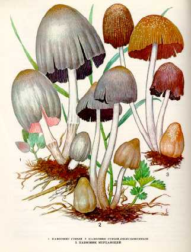

1. НАВОЗНИК СЕРЫЙ. ЧЕРНИЛЬНЫЙ ГРИБ
Гриб растет на унавоженных, богатых перегноем почвах, на полях, огородах, в садах, на свалках, около конюшен, навозных и компостных куч, в лесу на вырубках, около древесных стволов и пней лиственных пород. Встречается часто, большими группами, с мая по октябрь.
Шляпка серая или серовато-коричневая, в центре более темная, 5-10 см в диаметре, у молодого гриба яйцевидная, потом ширококолокольчатая с растрескивающимся краем. Поверхность шляпки с мелкими, немного темноватыми чешуйками. Мякоть светлая, быстро темнеющая. Вкус гриба сладковатый.
Пластинки свободные, широкие, у молодых белые, затем становятся темно-бурые, у старых черные.
Ножка белая, при основании слегка буроватая, гладкая, цилиндрическая, 10-20 см высотой, 1-2,5 см в диаметре, с белым, быстроисчезающим кольцом. По мере созревания шляпка и пластинки гриба расплываются в черную жидкость.
Гриб съедобен только в молодом
возрасте, до потемнения пластинок. Употребляется в вареном, жареном и
маринованном виде, как и навозник белый. Употребление его с
алкогольными напитками вызывает рвоту.
Обычно растет на унавоженной, богатой перегноем почве с июля до сентября.
Шляпка до 3 см в диаметре, сначала яйцевидная или цилиндрическая, затем ширококолокольчатая, мохнатая, позднее морщинистая, ребристая, трещиноватая, к старости расплывается в черную массу. Мякоть белая, затем темнеет, с приятным запахом и вкусом. Пластинки свободные, сначала белые, затем черные, расплывающиеся. Споры округло-эллипсоидные, неравнобокие.
Ножка до 10 см длины, 0,3— 0,5 см толщины, полая, снизу слегка утолщенная, белая, без кольца.
Малоизвестный съедобный гриб. Употребляется только в молодом возрасте (пока не потемнели пластинки) свежим и маринованным.
3. НАВОЗНИК МЕРЦАЮЩИЙ.
Растет большими скученными группами около гнилых пней, у основания стволов деревьев, на увлажненных почвах, пастбищах, огородах, в садах, на улицах. Встречается часто со второй половины мая по октябрь (после дождей). На одном месте плодоносит несколько раз за сезон. Шляпка желто-бурая, 1—3 см в диаметре, тонкая, с частыми бо- роздками, идущими от гладкой верхушки к краю, в молодом возрасте яйцевидная, позднее колокольчатая, поверхность покрыта блестящими чешуйками, придающими мерцающий блеск, впоследствии чешуйки исчезают. Мякоть тонкая, беловатая, палевая, с мягким вкусом, запах грибной. Пластинки свободные, частые, сначала почти белые, затем темнеющие и, наконец, черные. Споры эллипсоидные, неравнобокие, темно-бурые. У старых грибов шляпка и пластинки расплываются в темную чернильную массу.
Ножка длиной 8—10 см, толщиной 0,3—0,5 см, ровная, шелковистая, очень гибкая, полая.
Малоизвестный съедобный гриб. Употребляются только шляпки в молодом возрасте (пока пластинки не потемнели).
Навозник мерцающий образует фермент целлюлазу, с помощью которой он хорошо разлагает и усваивает клетчатку древесины. Этот гриб можно использовать при переработке древесных отходов (опилок, мелкой щепы и т. п.) для получения органических удобрений.
Особенности развития грибов навозников. После появления на поверхности почвы они растут не более 2 суток и быстро отмирают. Поэтому собирать их надо буквально в «день рождения» и сразу перерабатывать. Хранить их свежими можно не более 3—4 ч, так как эти грибы быстро портятся: пластинки становятся черными и слизистыми.